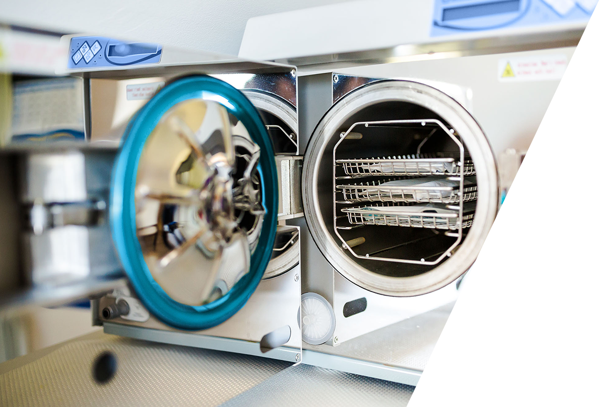

W trosce o Państwa bezpieczeństwo
wszystkie narzędzia takie jak cęgi,
cążki, frezy, itp. są dezynfekowane oraz
sterylizowane w autoklawie najwyższej
klasy (B). Natomiast rzeczy jak pilniki, chusty,
kapturki ścierne, folie, są jednorazowego
użytku.
Mają Państwo więc pewność, że każdy
zabieg wykonywany jest z zachowaniem
aseptyki i antyseptyki.